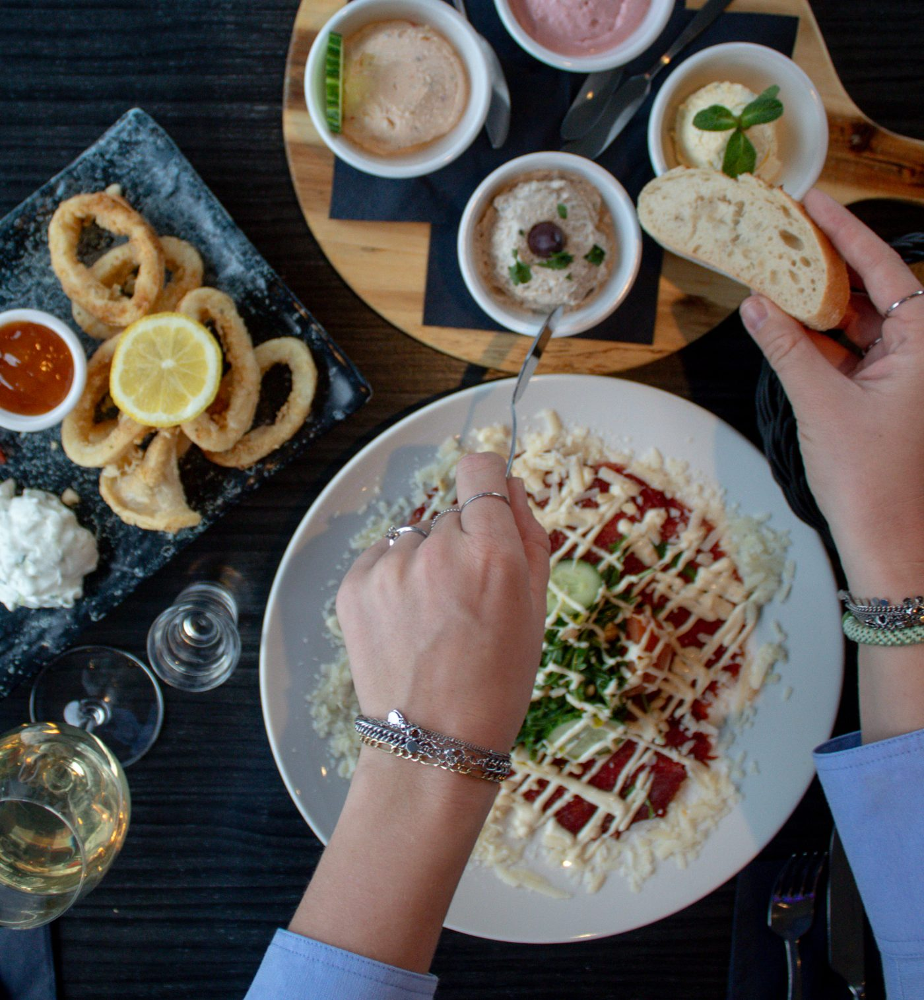
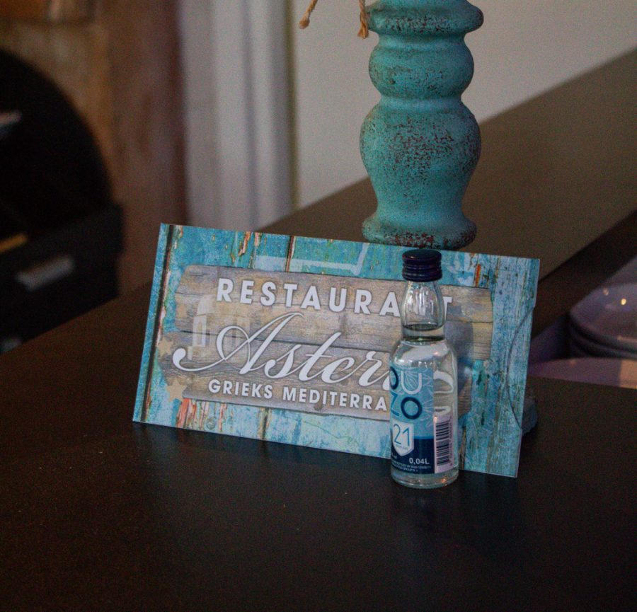
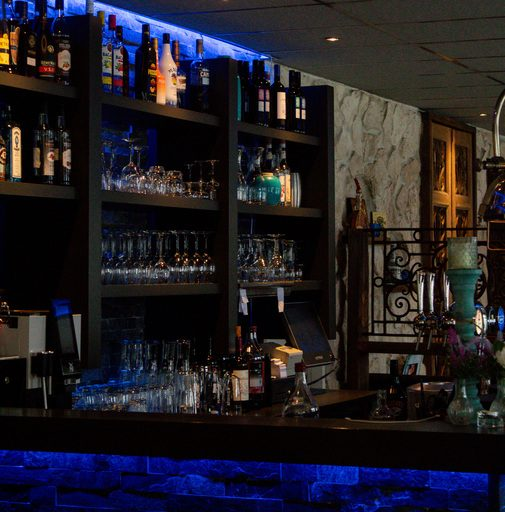
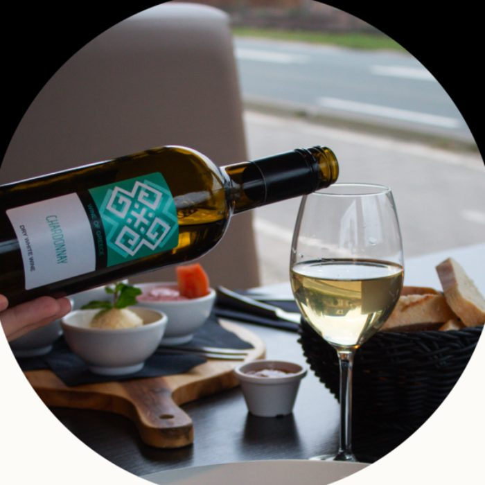

Grieks mediterraans restaurant in Boekel
Sinds 2010 een plek waar je in een gezellige, ongedwongen sfeer geniet van goed eten en een fijne avond.
Woensdag t/m zaterdag 17:00 tot 21:00 · zondag 16:30 tot 21:00
Welkom bij Asteria
Restaurant Asteria biedt sinds 2010 een plek waar je in een gezellige en ongedwongen sfeer kunt genieten van goed eten en een fijne avond. Op de kaart vind je een ruime keuze aan vis- en vleesgerechten, aangevuld met een mooi assortiment wijnen, bieren en andere dranken.
Liever thuis genieten? Ook dan ben je bij ons aan het juiste adres: bij Asteria kun je terecht voor heerlijke afhaalgerechten, zodat je van onze keuken kunt genieten waar je maar wilt. We nemen graag de tijd om ervoor te zorgen dat alles tijdens je bezoek naar wens is. Jullie zijn van harte welkom bij Asteria!


Kerstmenu
Tijdens kerst zijn we eerste en tweede kerstdag geopend. Voor het hele gezelschap staat er een welkomstborreltje met een broodplankje klaar.
uit te breiden met tomatensoep of Griekse vleessoep€ 39,50 p.p.
tot 12 jaar€ 18,50 p.p.
Voorgerechten
- Carpaccio · klassieke carpaccio van ossenhaas met Parmezaanse kaas en pijnboompitjes
- Kefthedakia fournou · Grieks gekruide gehaktballetjes in tomatensaus, gegratineerd met kaas
- Garithes · in knoflookolie gebakken zeewatergarnalen
- Kollokithokefthedes · gefrituurde courgette/fetakoekjes met tzatziki
- Dolmades · wijnbladeren gevuld met rijst en gehakt, met een romige saus van citroen en dille
- Feta saganaki · gefrituurde fetakaas met honing
- Griekse vleessoep · rijkgevulde bouillonsoep met verse groente en varkensvlees
- Domatosoupa · tomatensoep met gehaktballetjes
Hoofdgerechten
- Mixed grill · souvlaki kophaas, kipfilet, gekruid gehakt en gyros, met tzatziki
- Filetto moschari · gegrilde biefstuk met rode portsaus
- Solomos · zalmfilet uit de oven
- Tsipoura · gegrilde doradefilet
- Pastitio me spanaki · lasagne gevuld met fetakaas en spinazie
- Souvlaki choriatiko · spies met ossenhaas, varkenshaas en gamba's, met tzatziki
- Stifatho · stoofpotje van kalfsvlees, gegratineerd met kaas
Met friet, rijst en koolsalade.
Nagerechten
- Tiramisu
- Tourta me crema · romig MonChou-toetje met koek en rood fruit
- Crème brûlée · met vanille-ijs en slagroom
- Pagoto sokolata · vanille-ijs met chocoladesaus en slagroom
- In de mix · vanille-ijs, karamelsaus, slagroom, brownies en meringue
- Baklava · filodeeg met walnoten en suikersiroop, vanille-ijs en slagroom
- Kafedaki · koffie of thee met Tia Maria, Licor 43, Amaretto of Baileys
Kindermenu
- Voor · mini frikadelletjes met mayonaise of tomatensoep met gehaktballetjes
- Hoofd · kipfilet van de grill met gyros, zalmfilet uit de oven, of gekruid gehakt van de grill met gyros; steeds met frietjes en appelmoes
- Na · kinderijsje

Dranken
Griekse wijnen, ouzo en Metaxa, cocktails, bier van de tap en uit de fles.
** Deze cocktail is alcoholvrij verkrijgbaar.
Glas, halve liter, liter of fles: de prijzen per wijn staan op de wijnkaart (PDF).
Rosé
Rosé Boutari
Droge rosé. Heldere roze kleur, intense geur van rood fruit, gedomineerd door kersen.
Past bij pastitio me spanaki, wit vlees, maar veelzijdig.Rosé Simio
Halfdroge rosé. Lichtroze, met een licht zoete en frisse afdronk. Makkelijk drinkbaar.
Past bij kip- of visgerechten.Rood
Huiswijn rood
Droog, van de agiorgitiko-druif. Vol, met aroma's van rijpe kersen en verse bramen.
Past bij vlees van de grill.Imiglykos
(Half)zoete rode wijn met kersen en bramen. Fris en zacht. Ook in wit.
Past bij lichte vleesgerechten.Mavrodaphne
Zoete dessertwijn: ingedroogde rozijnen, kersen en kaneel. 12 maanden op houten vaten.
Past bij chocoladedesserts, zoete gerechten en ijs.Amethystos rouge
Droog, rood bosfruit, kersenjam, specerijen en eiken. Cabernet sauvignon, merlot en agiorgitiko, gerijpt op hout.
Past bij lamsvlees en de traditionele stifatho.Rigas Koupa (King of Hearts), Nico Lazaridi
Cabernet sauvignon en merlot. Vol en rond, met koffie en pure chocolade in de afdronk.
Past bij vleesgerechten met saus en pangerechten.Merlot
Kersen, pruimen en zwarte bessen, mooi rond met een lange fruitige afdronk.
Past bij vlees van de grill, moussaka en tiganaki moschari.Syrah
Vol, uit de Peloponnesos: rode vruchten, pruimen en bramen.
Past bij sterker gekruid vlees, stifatho en bekri meze.Wit
Huiswijn wit
Droog, citrus en witte bloemen. Toegankelijk en typisch Grieks.
Past bij vis, wit vlees en salades.Imiglykos wit
(Half)zoet, rozijnen en perzik. Fris en zacht.
Past bij desserts.Retsina
Droge witte wijn met de typische harssmaak, een erkend Grieks streekproduct.
Past bij mezedes en pittige gerechten.Retsina Malamatina
Droge harswijn uit de streek Thessaloniki, geserveerd in een traditioneel glas.
Past bij vis, salades, gegrild vlees, kaas en mezedes.Samos
Erg zoete dessertwijn van rijpe muskaatdruiven, een Griekse klassieker.
Chardonnay
Uit de Peloponnesos: citrus, kweepeer en bloemen, lange afdronk.
Past bij vis van de grill, vegetarisch en souvlaki Katerini.Amethystos blanc
Sauvignon blanc en assyrtiko: perzik, mango, ananas en citrus. Fris en vol.
Past bij vrijwel alles, het best bij vis en tiganaki kotopoulo.Dama Koupa (Queen of Hearts), Nico Lazaridi
Heldere witgele kleur, wit vruchtvlees en lentebloemen.
Past bij mezedes, vis, pasta en groene salades.Sauvignon blanc
Exotische vruchten, ananas en mango, lange fruitige afdronk.
Past bij gegrilde kip of lam, vette vis en de voorgerechten.Van de tap
Uit de fles
Seizoensbieren
Geen 18, geen alcohol. Prijzen op aanvraag.
Water
Speciale koffie · 7,90
Alle gewone koffies zijn ook cafeïnevrij te bestellen.
Afhalen
Liever thuis genieten? Bij Asteria kun je terecht voor afhaalgerechten van de hele kaart, zodat je van onze keuken kunt genieten waar je maar wilt.
Geef je bestelling telefonisch door; noem gerust de nummers van de menukaart.
Bel 0492 774 341Grote groepen
Dineren bij Asteria kan ook met een grote groep. Neem tijdens de openingstijden telefonisch contact op of stuur een mail. Online kun je zelf tot 20 personen reserveren.
Samen kijken we naar de mogelijkheden en jullie wensen, bijvoorbeeld dineren met ons menu of juist een menu dat door ons wordt samengesteld.
Mail onsCadeaukaart
Leuk om te geven tijdens de feestdagen, maar ook voor een verjaardag of als bedankje. Het bedrag bepaal je zelf.
De cadeaukaart haal je tijdens de openingstijden op bij Asteria. Bij aankoop krijg je een klein Grieks presentje.
Glutenvrij, lactosevrij of een andere allergie? Bekijk ons allergenenmenu (PDF) of vraag ernaar bij de bediening.
Openingstijden
- Maandaggesloten
- Dinsdaggesloten
- Woensdag17:00 – 21:00
- Donderdag17:00 – 21:00
- Vrijdag17:00 – 21:00
- Zaterdag17:00 – 21:00
- Zondag16:30 – 21:00
Eerste en tweede kerstdag geopend, in twee tijdsloten (16:00 en 19:00). Alleen telefonisch reserveren.